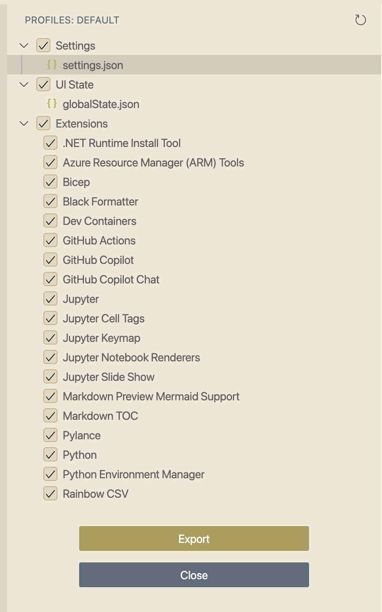
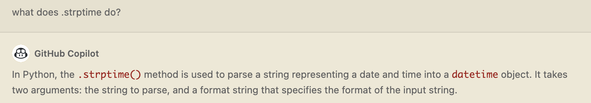

Configure VS Code
for Productive Programming


About me

Python Cloud Advocate at Microsoft
Formerly: UC Berkeley, Coursera, Khan Academy, Google
Find me online at:
| Mastodon | @pamelafox@fosstodon.org |
| @pamelafox | |
| GitHub | www.github.com/pamelafox |
| Website | pamelafox.org |
Today's topics

- Dev Containers
- VS Code Profiles
- VS Code Tools
- GitHub Copilot
Feel free to ask questions in the chat or @ me after! 🙋🏽♀️ 🙋🏻 🙋🏼♀️ 🙋🏿♂️
Demo app
github.com/Azure-Samples/azure-flask-postgres-flexible-appservice
aka.ms/flask-pgflex-app
Built with Flask 🎸 + PostgreSQL 🐘
Dev Containers

Dockerfile
FROM mcr.microsoft.com/devcontainers/python:3.11-bullseye
RUN apt-get update && export DEBIAN_FRONTEND=noninteractive \
&& apt-get -y install --no-install-recommends postgresql-client \
&& apt-get clean -y && rm -rf /var/lib/apt/lists/*
RUN python -m pip install --upgrade pip
🔗 Using image from mcr.microsoft.com devcontainer Python images
👁️ See full file: Dockerfile
Docker-compose.yaml
👁️ See full file: docker-compose.yaml
devcontainer.json
Configuration needed to work with the Docker files:
{
"dockerComposeFile": "docker-compose_dev.yml",
"service": "app",
"workspaceFolder": "/workspace",
"forwardPorts": [8000, 5432],
"portsAttributes": {
"8000": {"label": "Django port", "onAutoForward": "notify"},
"5432": {"label": "PostgreSQL port", "onAutoForward": "silent"}
},
...
}
👁️ See full file: devcontainer.json
devcontainer.json
Automatically installed extensions:
"extensions": [
"ms-python.python",
"charliermarsh.ruff",
"ms-python.black-formatter",
"mtxr.sqltools",
"mtxr.sqltools-driver-pg"
]
👁️ See full file: devcontainer.json
devcontainer.json
Extension configuration settings:
"sqltools.connections": [
{
"name": "Local database",
"driver": "PostgreSQL",
"server": "db",
"port": 5432,
"database": "relecloud",
"username": "postgres",
"password": "postgres"
}
],
👁️ See full file: devcontainer.json
devcontainer.json
VS Code editor settings:
...
"python.defaultInterpreterPath": "/usr/local/bin/python",
"python.linting.enabled": true,
"python.testing.pytestEnabled": true,
"python.testing.unittestEnabled": false,
"files.exclude": {
".coverage": true,
".pytest_cache": true,
"__pycache__": true
}
...
👁️ See full file: devcontainer.json
GitHub Codespaces
Codespaces is an online development environment that uses Dev Container definitions.
Open any GitHub repo in Codespaces by clicking Code button, selecting Codespaces tab, and clicking Create codespace on main.
Then wait patiently... ☺️

60 hours of free usage each month.
🔗
Tips for optimizing quotas
VS Code Profiles

Profile contents
Profiles are for your personal preferences, though they can be exported and shared.
- Settings
- UI State
- Extensions
Settings
You typically set these in "Preferences: Open User Settings" or via extensions.
...
"editor.autoClosingBrackets": "never",
"editor.inlineSuggest.enabled": true,
"editor.minimap.enabled": false,
"[python]": {
"editor.formatOnSave": true,
"editor.codeActionsOnSave": {
"source.fixAll": true
},
"editor.defaultFormatter": "ms-python.black-formatter"
}
...
👁️ See full exported settings: settings.json
Multiple profiles
You can use multiple profiles for different ways of working.
For example...
| Profile | Settings | Extensions |
|---|---|---|
| Frontend | "workbench.colorTheme": "Solarized Light", "github.copilot.enable": {"*": true}, | axe Accessibility Linter, Can I Use, CSS Peek, ESLint, Prettier |
| Teaching Python | "editor.fontSize": 22, "github.copilot.enable": {"*": false}, "window.zoomLevel": 3 | Live Share, VS Code Pets, Doctest Button |
Switch between profiles using the gear icon in bottom right.
Sharing profiles
From the gear icon, select "View profile contents" and then select "Export".
👁️ See exported profile: in vscode.dev, as a gist
VS Code Tools

VS Code Debugging
.vscode/launch.json:
{
"version": "0.2.0",
"configurations": [
{
"name": "Python: Flask",
"type": "python",
"request": "launch",
"module": "flask",
"env": {"FLASK_APP": "src.flaskapp", "FLASK_DEBUG": "1"},
"args": ["run", "--port=50505", "--no-debugger", "--reload"],
"jinja": true,
"justMyCode": false
}
]
}
VS Code Testing
Supports unittest and pytest.
In requirements-dev.txt:
coverage
pytest
pytest-cov
pytest-flask
pytest-playwright
In devcontainer.json:
"python.testing.pytestEnabled": true,
"python.testing.unittestEnabled": false,
In pyproject.toml:
[tool.pytest.ini_options]
addopts = "-ra --cov -vv"
[tool.coverage.report]
show_missing = true
GitHub Copilot

Many ways to invoke Copilot
- Editor: Just type and it will suggest code

- Chat: Ask questions about your code or code topics. 
- Context menu: Ask it to explain, fix, or test selected code.

Prompting Copilot
- Provide context
- Open files
- Comments
- Imports
- Names
- Types
- Be predictable
- Naming conventions
- Software architecture patterns
📖 Blog: Best practices for prompting GitHub Copilot in VS Code
🎥 Video: Best practices for prompting GitHub Copilot in VS Code
Avoiding Copilot confabulations
- Paste in example code from docs
- Be wary when asking about niche libraries
Find out ASAP if Copilot made something up:
- Use real-time linters to check your work
- Write tests for your code
Next steps
More example repos
All of these repos are equipped with Dev Containers:
| App Service | Functions | Container Apps | |
|---|---|---|---|
| Django + PG |
Quiz app
+ VNET: Reviews app + VNET: Booking app cookiecutter | Booking app | |
| Flask | Simple App | Simple API |
Simple App Simple API + CDN: App + CDN: API |
| + PostgreSQL |
Quiz
app + VNET: Reviews app | Surveys App | |
| FastAPI | Salary API |
Simple
API + APIM: Simple API + CDN: Maps API | Simple API |
| + MongoDB | Todo API | Todo API | Todo API |
Thank you!

Grab the slides @ aka.ms/superstream-vscode
Find me online at:
| Mastodon | @pamelafox@fosstodon.org |
| @pamelafox | |
| GitHub | www.github.com/pamelafox |
| Website | pamelafox.org |
Let me know about your experiences with VS Code + Python!
Any questions?